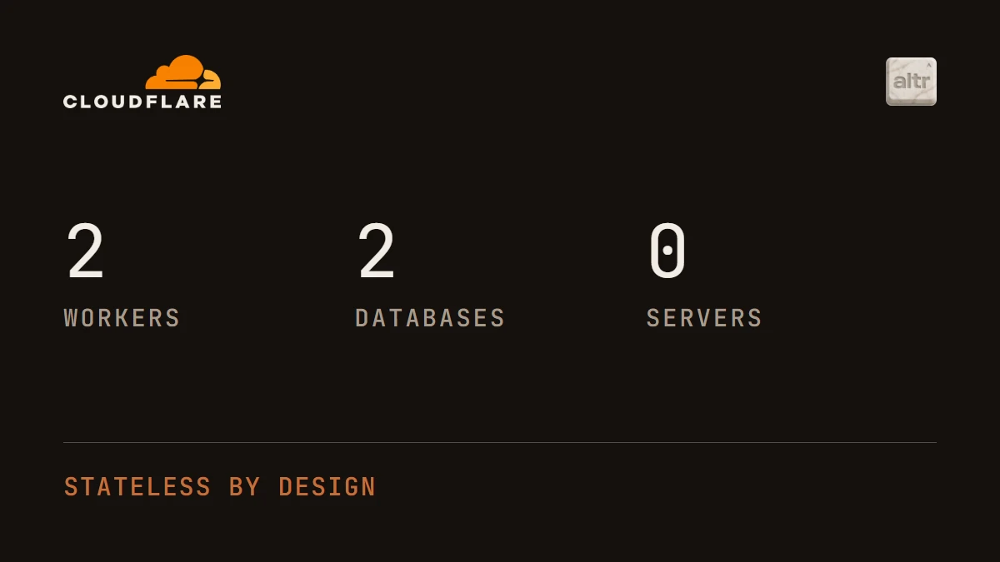

A commercial real estate chatbot, built and deployed by describing it.
We are building a chat assistant for commercial real estate: ask it who owns a building, what the debt on it is, what it is worth, and get an answer drawn from county records rather than from memory. All of it runs on Cloudflare Workers.
The reason we build there is that the platform itself is programmable the same way the product is. Cloudflare exposes everything through an API, so creating a worker, adding a database, pointing a domain at it, setting a nightly schedule or reading back what is deployed are all things we describe in a sentence and watch happen. The infrastructure is edited in the same conversation as the code.
It is also all in one place. Compute, databases, DNS, the domains themselves and outbound email are native to one account, so there is no stitching four vendors together and no afternoon lost to making their credentials agree.